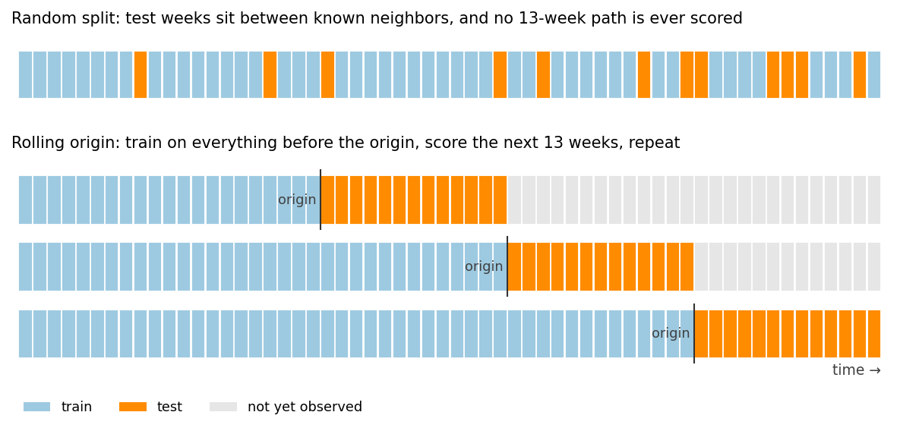

5.3 Umsatzprognose und Szenarioplanung
Über die deutsche Ausgabe
Diese Seite ist eine KI-Übersetzung der englischen Ausgabe von Marketing Science in Python. Die englische Ausgabe ist maßgeblich und hat bei Abweichungen Vorrang. Code, Notebooks und Text in Abbildungen bleiben auf Englisch. Englische Ausgabe lesen
Es ist Ende September. Der Umsatz liegt seit Jahresbeginn 7.3% im Plus, aber das Jahresziel verlangt 8.0%. Dreizehn Wochen bleiben, darunter die Strecke von Black Friday bis Weihnachten, in der dieses Unternehmen einen überproportionalen Anteil seines Jahres macht. Das Planungsteam muss entscheiden, ob der aktuelle Plan ausreicht oder ob zusätzliche Maßnahmen nötig sind.
| Ziel und Umsatzstatus | Wert |
|---|---|
| Umsatz bisher (39 Wochen) | $8.02M |
| Seit Jahresbeginn vs. Vorjahr | +7.3% |
| Verbleibende Wochen | 13 |
| Vorjahresergebnis | $10.30M |
| Jahresziel | $11.12M |
| Ziel vs. Vorjahr | +8.0% |
Für diese Entscheidung brauchen wir zwei Dinge: wo der Umsatz unter dem aktuellen Plan voraussichtlich landet, und wie stark eine zusätzliche Marketingmaßnahme dieses Ergebnis bewegen könnte. Das Erste ist eine Prognosefrage. Das Zweite ist eine kausale Frage, und ihre Antwort kommt aus den Messkapiteln dieses Buches, nicht aus der Prognose.
Drei Begriffe tragen das Kapitel. Das Ziel ist eine feste, vom Unternehmen gewählte Schwelle. Die Baseline ist eine Prognose der verbleibenden Wochen, wenn der aktuelle Plan weiterläuft, mit den wiederkehrenden Promotions, Preisen und Medien, die die Historie geprägt haben, weiterhin an Ort und Stelle. Das Inkrement ist das, was eine zusätzliche Marketingmaßnahme oben auf diese Baseline legt. Für ein Szenario \(s\) ist das Jahresendergebnis
\[ Y^{(s)}_{\text{year-end}} = Y_{\text{so far}} + R_{\text{baseline}} + \Delta_s \]
der bisherige Umsatz, plus die Baseline-Prognose der verbleibenden Wochen, plus das Inkrement, das das Szenario verursacht.

Die Reihe ist vom Autor generiert: sechs 52-wöchige Geschäftsjahre wöchentlicher E-Commerce-Umsätze auf dem realen Kalender 2014 bis 2019. Die Feiertagsspitzen variieren von Jahr zu Jahr in ihrer Stärke, und der Kampagneneffekt hat eine bekannte wahre Größe.
Begleit-Notebook: sec5.3_sales_forecasting.ipynb reproduziert jede Zahl und jede Abbildung dieses Kapitels (die beiden Konzeptdiagramme stammen aus regenerate_sec5_3_figures.py).
Auf GitHub ansehen
Die Baseline erstellen und validieren
Bei einem Umsatzplus von 7.3% gegenüber dem Vorjahr ist es verlockend, diese Wachstumsrate auf die Vorjahressumme zu projizieren und das eine Prognose zu nennen. Diese Abkürzung funktioniert nur, wenn der Trend anhält und das letzte Quartal dem des Vorjahres gleicht. Das Feiertagsquartal ist der Ort, an dem beide Annahmen zusammenbrechen: Die Spitze ist groß, und ihre Größe variiert von Jahr zu Jahr. Das Quartal endet auch nicht auf der Spitze. Sobald der Versandschluss vorbei ist, fällt die Weihnachtswoche hart ab, und sie landet in manchen Jahren in Geschäftswoche 51 und in anderen in Woche 52.

Wir brauchen also ein Modell für die verbleibenden Wochen. Zwei Benchmarks setzen die Untergrenze, und vier Kandidaten treten auf derselben Historie gegen sie an.
- Naiv. Die letzte beobachtete Woche wiederholen. Blind für die Saison, die gleich beginnt.
- Saisonal naiv. Dieselbe Geschäftswoche des Vorjahres wiederholen. Das ist “das Muster des Vorjahres anwenden”, explizit gemacht.
- ETS (exponentielle Glättung). Niveau, Trend und Saisonalität als explizite Komponenten, in zwei Versionen, mit und ohne den 52-Wochen-Saisonterm.
- Prophet. Ein sich ändernder Trend, eine Jahressaison und Kalendereffekte, als getrennte additive Bausteine angepasst.
- LightGBM auf Lag-Features, mit der Geschäftswoche und dem Feiertags- und Promotionskalender als Eingaben. Ein fester, leicht regularisierter Vergleichskandidat, kein getuntes Produktionsmodell.
- TimesFM 2.5. Ein vortrainiertes Foundation Model, zero-shot verwendet: keine Anpassung und nichts außer der Umsatzhistorie.

from statsmodels.tsa.exponential_smoothing.ets import ETSModel
def fit_ets(train, seasonal=None):
model = ETSModel(
pd.Series(np.log(train)),
error="add", trend="add", damped_trend=True,
seasonal=seasonal, seasonal_periods=52 if seasonal else None,
)
return model.fit(disp=False)Die sieben Pfade liegen über der Spitze weit auseinander, und nichts im Diagramm sagt, welchem man glauben soll. Der Kandidat, der die Benchmarks in einem Backtest schlägt, wird zur Baseline. Beliebt oder neu zu sein qualifiziert ein Modell nicht.
Validierung mit einem Rolling-Origin-Backtest
Der übliche Ansatz ist eine zufällige Trainings-/Testaufteilung. Auf diesen Daten ergibt das für LightGBM einen WAPE von 4.5%. Diese Zahl ist aus zwei Gründen irreführend. Das Mischen lässt das Modell auf Wochen trainieren, die nach den vorhergesagten liegen, und mit Lag-Features haben die meisten Testzeilen benachbarte Wochen im Trainingsset. Und eine zufällige Aufteilung bewertet Interpolation Zeile für Zeile: Sie kann nicht einmal das Objekt erzeugen, das die Entscheidung braucht, einen 13-Wochen-Pfad von einem festen Ursprung aus.
Die Regel lautet, dass jedes Modell nur die Information verwendet, die am Prognoseursprung verfügbar ist, und jede historische Prognose, die zur Bewertung dient, derselben Regel folgt. Ein Rolling-Origin-Backtest erzwingt das, und der Geschäftskalender macht es hier sauber. Jedes Jahr hat dieselbe 52-Wochen-Form, sodass die Entscheidung, vor der wir jetzt stehen, das Jahresende von Ende September aus zu prognostizieren, am selben Punkt von FY2016, FY2017 und FY2018 nachgespielt werden kann. FY2015 hat zu wenig Historie hinter sich, um eine 52-Wochen-Saison zu schätzen. Das ergibt drei Replikate der Frage.

HORIZON = 13
SEPT_ORIGINS = [143, 195, 247] # end of fiscal week 39, FY2016..FY2018
for origin in SEPT_ORIGINS:
train = y[:origin] # nothing after the origin, for any model
actual = y[origin:origin + HORIZON]
for name, forecast in fit_all_models(train, HORIZON).items():
score(name, origin, actual, forecast)Zwei Punktmetriken reichen, um die Modelle zu vergleichen. Der wöchentliche WAPE, \(\sum_t |y_t - \hat y_t| / \sum_t |y_t|\), ist der Fehler, den ein Planer wiedererkennt. Die Jahresendfrage hängt vom vorzeichenbehafteten Fehler der 13-Wochen-Summe ab, weil sich wöchentliche Abweichungen in der Summe eines Quartals teilweise aufheben. Ein Vorbehalt vor der Tabelle. Prophet und LightGBM erhalten den Feiertags- und Promotionskalender, TimesFM erhält nur die Umsatzhistorie. Die Reihe ist zudem synthetisch auf einem 52-Wochen-Zyklus, genau die Form, für die ein saisonales ETS gebaut ist.
| Modell | Wöchentlicher WAPE | Fehler der 13-Wochen-Summe | Bias |
|---|---|---|---|
| Naiv | 13.2% | 6.8% | -6.8% |
| Saisonal naiv | 8.6% | 5.5% | -5.5% |
| ETS, Niveau + Trend | 13.3% | 4.7% | -4.7% |
| ETS, Niveau + Trend + Saison | 7.4% | 2.6% | -1.3% |
| LightGBM, Lags + Kalender | 12.3% | 5.7% | -5.7% |
| Prophet, Kalender-Regressoren | 10.5% | 5.3% | +1.8% |
| TimesFM 2.5, zero-shot | 10.8% | 2.6% | -1.5% |
Die Saisonalität treibt das Quartal. Das saisonale ETS hat in beiden Spalten den niedrigsten Fehler und wird zur Baseline. Es ist hier auch der einzige Kandidat, dessen angepasstes Modell viele 13-Wochen-Pfade mit ihrer Unsicherheit simulieren kann, was der nächste Schritt braucht. TimesFM zog bei der 13-Wochen-Summe mit nichts als der Rohreihe gleich. Prophet verbesserte die 13-Wochen-Summe des saisonal naiven Modells kaum, weil seine Jahressaison ein Zyklus von 365.25 Tagen ist, während dieses Unternehmen in festen 52-Wochen-Jahren plant. Auf einer einzigen synthetischen Reihe stellt keines der beiden Ergebnisse eine Rangfolge der Methoden auf. Die LightGBM-Zeile trägt die Validierungslektion: 12.3% aus dem Rolling Origin gegen 4.5% aus der zufälligen Aufteilung ist die Größe des Leakage.
Die Wahrscheinlichkeit, das Ziel zu erreichen
Nun die Live-Version des Verfahrens, das der Backtest gerade validiert hat. Das saisonale ETS auf alles bis Ende September anpassen, 5,000 vollständige 13-Wochen-Pfade simulieren und die Summe jedes Pfades zu den $8.02M bisherigen Umsatzes addieren.
result = fit_ets(y[:LIVE_ORIGIN], seasonal="add")
paths = simulate_paths(result, h=13, repetitions=5000) # centered residual bootstrap
year_end = sales_so_far + paths.sum(axis=0) # one total per path
p10, p50, p90 = np.percentile(year_end, [10, 50, 90])
p_hit = (year_end >= target).mean()Wöchentliche Prognosefehler sind über den Horizont korreliert, und Quantile addieren sich nicht, weshalb der Code vollständige Pfade simuliert und jeden einzeln summiert, statt wöchentliche Quantile zu stapeln.

Die Median-Jahresendprognose liegt bei $10.91M, mit einem 80%-Intervall von $10.79M bis $11.05M. Der Median ist das, was üblicherweise in Präsentationen erscheint, aber er ist keine Zusage. Das Ziel von $11.12M sitzt knapp über dem P90, sodass die Chance, es unter dem aktuellen Plan zu erreichen, bei 4% liegt. Das ist nicht unmöglich, aber klar unwahrscheinlich, und das Team hat jetzt eine Zahl dafür, wie unwahrscheinlich.
Die 4% stammen aus einer simulierten Verteilung, also braucht die Verteilung eine eigene Prüfung, und zwar auf der Größe, über die wir entscheiden: der 13-Wochen-Summe. Dasselbe Verfahren an vergangenen Ursprüngen nachzuspielen und zu fragen, ob die realisierte Summe innerhalb des 80%-Bandes lag, ist diese Prüfung. Über 15 nicht überlappende 13-Wochen-Fenster tat sie das 12-mal, nahe den nominalen 80%, und die drei September-Replikate deckten 2 von 3 ab. Das stützt die Breite des Bandes, nicht seinen Rand: Das Ziel liegt jenseits des P90, wo 15 Fenster eine so kleine Zahl wie 4% nicht beglaubigen können. Lesen Sie die Antwort als niedrige einstellige Prozentzahl und planen Sie gegen “klar unwahrscheinlich” statt gegen 4.0%.
Marketing-Szenarien brauchen gemessene Inkremente
Die Baseline-Verteilung sagt, wo der aktuelle Plan voraussichtlich landet. Die nächste Frage in jedem Planungsmeeting ist, ob eine zusätzliche Kampagne die Antwort ändern würde.
Die Feiertags-Promotionswochen des Vorjahres lagen etwa 22% über den umliegenden Wochen, also ist es verlockend, +22% für eine zusätzliche Kampagne einzuplanen. Dieser Abstand ist kein Kampagneneffekt. Promotions werden auf die stärksten Wochen gelegt, also ist ein Teil der 22% Saisonalität. Die Baseline trägt bereits den durchschnittlichen Effekt der wiederkehrenden Promotions, also steckt der größte Teil des Rests bereits in der Prognose. Was übrig bleibt, ist eine Mischung aus der Promotion und allem anderen, was das Modell verfehlt hat. Eine Prognose sagt, was voraussichtlich passiert, nicht, was wegen des Marketings passiert ist. \(\Delta_s\) kommt also von außerhalb der Prognose, und es braucht zwei Dinge, bevor es in die Simulation eingehen kann: eine Referenzbedingung, also das, worüber es ein Inkrement ist, und eine Unsicherheitsverteilung.
| Szenario | Inkrement | Woher die Zahl kommt |
|---|---|---|
| Aktueller Plan (Baseline) | 0 | die Baseline-Prognose |
| Zusätzliche Feiertagskampagne | +8% auf die vier Kampagnenwochen (SE 2.5 Punkte) | ein Geo-Experiment (Abschnitt 6.3) oder eine Causal-Impact-Analyse (Abschnitt 3.4) der Vorjahreskampagne |
| Zusätzliche Medieninvestition | +$60k über das Quartal (SE $25k) | eine kalibrierte MMM-Reaktionskurve (Abschnitt 6.2, Abschnitt 6.4) |
Diese Inkremente sind Platzhalter in der Form echter Messungen. Füllen Sie jede Zeile aus dem jeweiligen Kapitel oder lassen Sie sie weg; eine bayesianische Quelle wie ein kalibriertes MMM kann Posterior-Ziehungen direkt liefern.
Die Einheiten zählen, wenn ein Inkrement in die Simulation eingeht. Der Kampagneneffekt ist relativ: Er multipliziert die Kampagnenwochen-Umsätze jedes einzelnen Pfades, sodass eine starke Feiertagssaison einen proportional größeren Dollar-Lift einbringt. Der Medieneffekt kommt in Dollar an und wird direkt addiert.
beta = rng.normal(0.08, 0.025, size=n_paths) # campaign lift per path
campaign_base = paths[CAMPAIGN_STEPS, :].sum(axis=0)
year_end_campaign = sales_so_far + paths.sum(axis=0) + beta * campaign_base
media = rng.normal(60_000, 25_000, size=n_paths) # dollars over the quarter
year_end_media = sales_so_far + paths.sum(axis=0) + media| Szenario | P10 | P50 | P90 | P(Ziel erreicht) | Lesart |
|---|---|---|---|---|---|
| Aktueller Plan (Baseline) | $10.79M | $10.91M | $11.05M | 4% | Unwahrscheinlich |
| Zusätzliche Feiertagskampagne | $10.87M | $11.00M | $11.14M | 13% | Bessere Chancen, weiterhin unwahrscheinlich |
| Zusätzliche Medieninvestition | $10.85M | $10.97M | $11.11M | 8% | Hilft, reicht allein nicht |

Die Kampagne verschiebt den Median von $10.91M auf $11.00M. Die Tabelle hält die verbesserten Chancen und die verbleibende Lücke zugleich fest, was eine Punktprognose nicht kann.
Von der Prognose zur Entscheidung
Dieselbe Simulation beantwortet die umgekehrte Frage: Wie weit über dem Baseline-Median müsste das Quartal landen, und ist so etwas schon einmal passiert?
| Vergleich | Uplift gegenüber dem Baseline-Quartal |
|---|---|
| Erforderlich, um das Ziel zu erreichen | +7.2% |
| Größte September-Abweichung nach oben | +6.0% |
| Kampagnen-Inkrement (Median) | +3.0% |
| Medien-Inkrement (Median) | +2.1% |
Das Ziel zu erreichen erfordert ein Quartal 7.2% über dem Baseline-Median. Keines der drei September-Replikate kam auch nur in die Nähe; die größte Abweichung nach oben lag bei 6.0%, und selbst beide Inkremente zusammen bringen etwa 5%. Die Kampagne verbessert die Chancen von 4% auf 13%, aber das Ziel bleibt unwahrscheinlich.
Das Team hat jetzt die Wahl: mehr investieren, den operativen Plan ändern oder die Erwartungen revidieren. Was auch immer es wählt, die Lücke ist eine Zahl, mit der es im September planen kann. Sie beruht auf einer Baseline, die an dem Horizont validiert wurde, den die Entscheidung verwendet, und auf Inkrementen, die außerhalb der Prognose gemessen wurden.
Das Wichtigste in Kürze
- Validieren Sie die Baseline am Horizont und am Kalenderpunkt, den die Entscheidung verwendet, mit nur der Information, die an jedem Ursprung verfügbar ist. Eine zufällige Aufteilung beantwortet eine andere Frage.
- Entscheiden Sie aus der Verteilung, nicht aus dem Punkt. Vollständige Pfade über den Horizont zu simulieren verwandelt eine Medianprognose in eine 4%-Chance, das Ziel zu erreichen, die als niedrige einstellige Prozentzahl zu lesen ist, nicht als präzise Häufigkeit.
- Ein Szenario ist die Baseline plus ein getrennt gemessenes Inkrement, jeweils mit einer Referenzbedingung und einer Unsicherheit. Umsätze in Promotionswochen sind kein Inkrement.